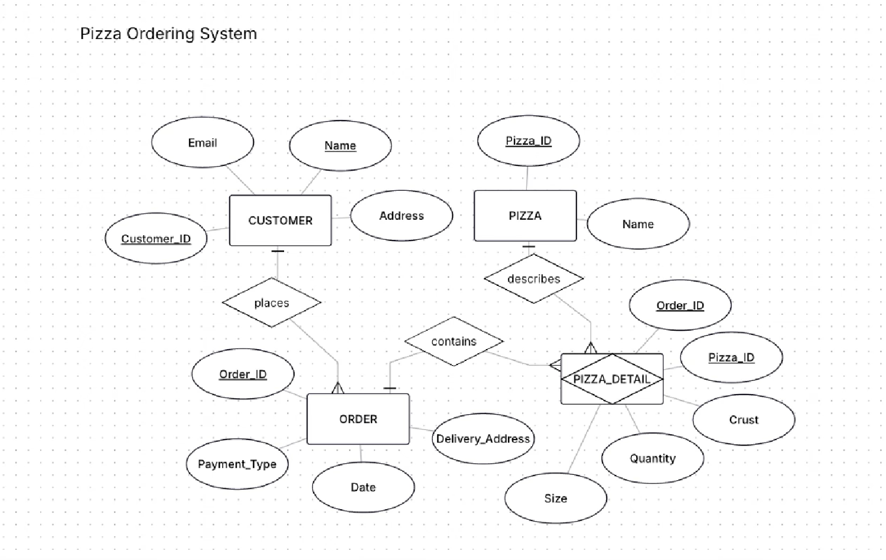
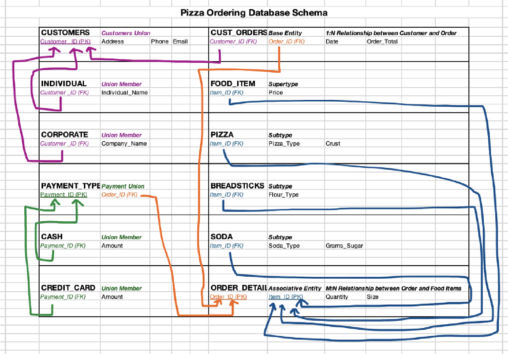
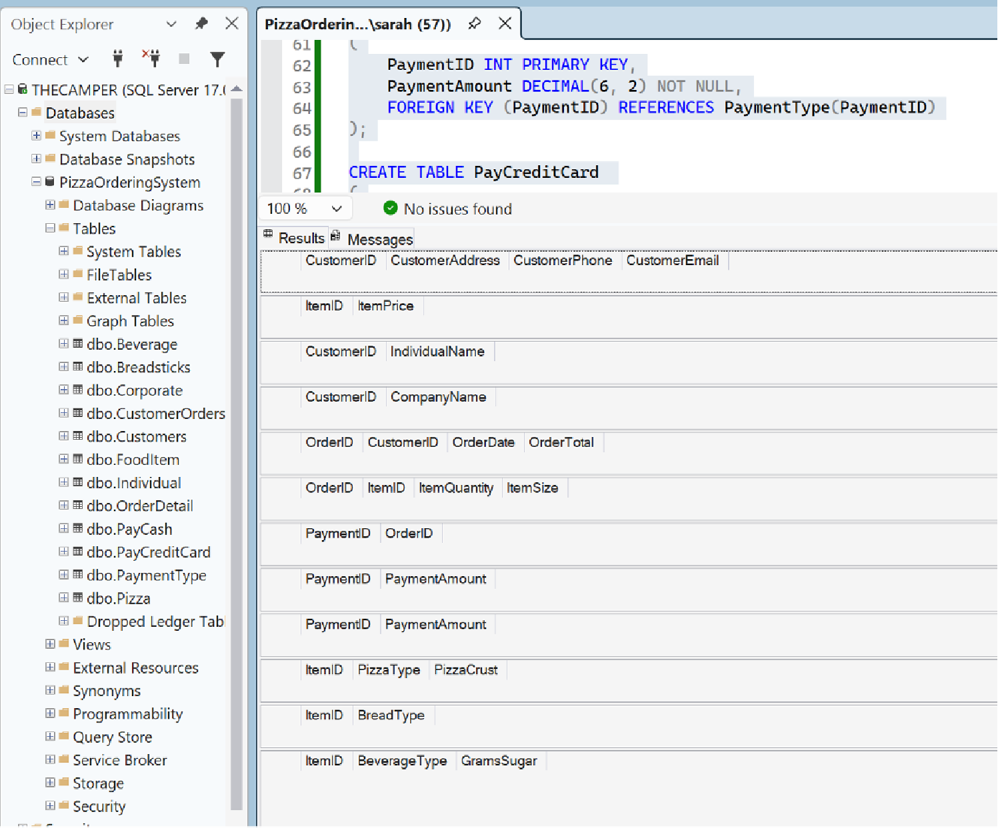
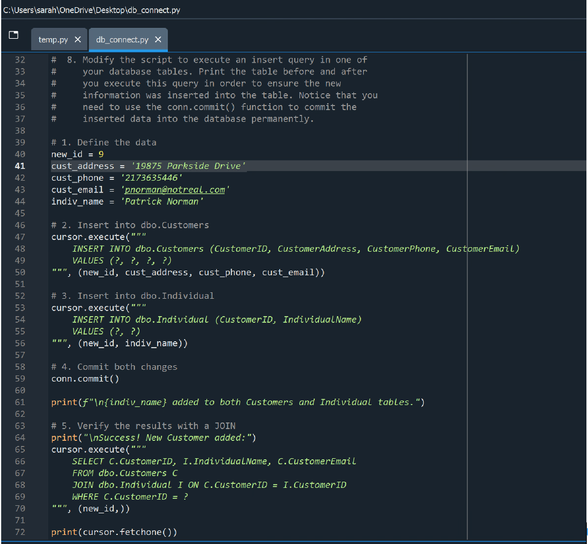
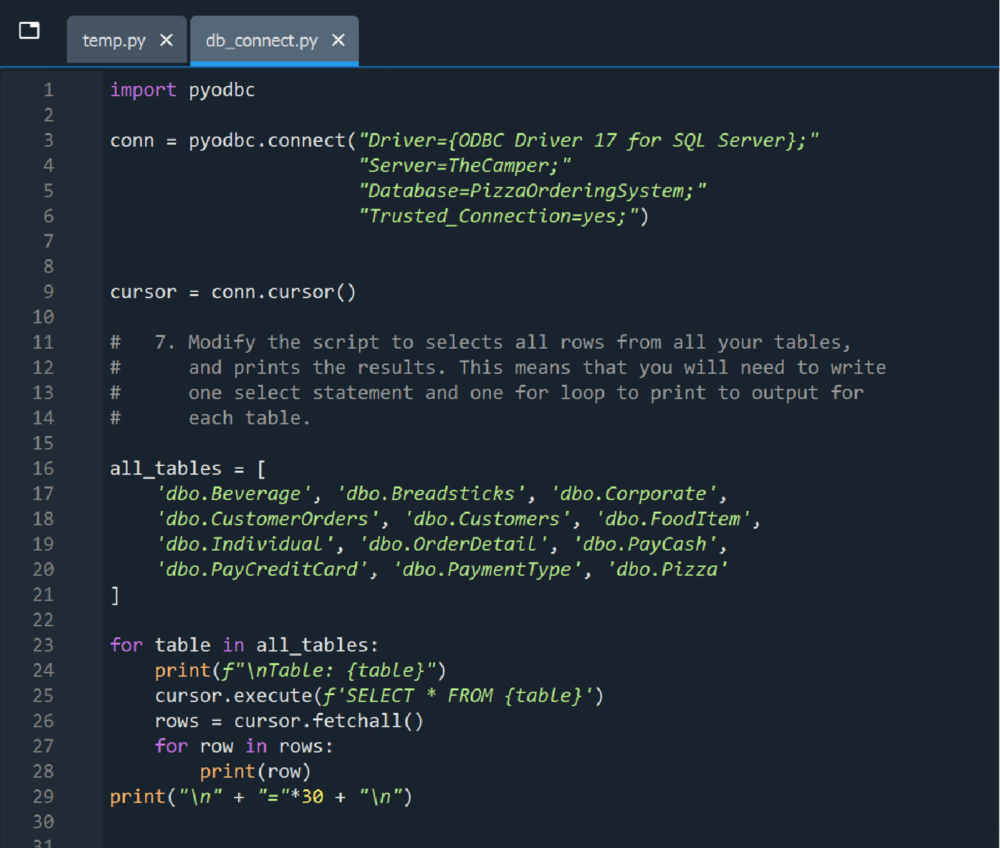

📋 Phase 1: Conceptual Design & Requirements Mapping (Lab 2)
The development cycle initiated by decomposing a complex retail food business prompt into core structural business entities. Cardinality and relationship parameters were isolated to define exactly how systemic objects interact before physical schema generation began.
- Customer to Order (1:N): Established that an individual customer can place one or more orders over time, but every individual order ticket traces back to exactly one specific customer registry anchor.
- Order to Pizza (N:M Associative Mapping): Determined that a single order ticket can contain multiple pizza items, and identical pizza configurations appear across numerous distinct orders. This required designing a dedicated associative entity to break down the many-to-many link.

📐 Phase 2: Enhanced ERD & Schema Normalization (Lab 4)
To eliminate data redundancy, avoid update anomalies, and enforce clean referential boundaries, the conceptual layout was refactored into an Enhanced Entity-Relationship Diagram (EERD) utilizing advanced supertype/subtype relationships:
- The Customer Union Hierarchy: Developed a parent
CUSTOMERSsupertype (Primary Key:Customer_ID) that branches out into distinctINDIVIDUALandCORPORATEsubtype entities via strict foreign key inheritance pathways. - The Polymorphic Food Item Schema: Engineered a master
FOOD_ITEMsupertype containing base pricing tables, driving specialized sub-tables forPIZZA(tracking crust and type),BREADSTICKS(tracking flour configurations), andSODA(tracking sugar measurements). - The Associative Resolution Grid: Implemented
ORDER_DETAILas a robust mapping table, joiningOrder_IDandItem_IDinto a composite primary key to record the localized size and quantity metrics of every single line item.

💻 Phase 3: Physical DDL Implementation & Database Scripts
The normalized EER diagram blueprints were compiled into raw SQL Data Definition Language (DDL) deployment scripts inside a Microsoft SQL Server environment, manually building table topologies and structural constraints:
- Enforcing Referential Integrity: Authored schema declaration statements defining explicit
PRIMARY KEYconstraints alongside cascadingFOREIGN KEY ... REFERENCESkeys to safeguard downstream database dependencies. - Securing Payment Type Tracks: Configured an independent
PAYMENT_TYPEsupertype tracking branch relationships into specialized, inherited tables forCASHandCREDIT_CARDprocessing records.

⚡ Phase 4: Programmatic Data Manipulation & System Audits (Lab 9)
With the database tables compiled, programmatic interactions were deployed using Python's pyodbc driver to connect seamlessly with the TheCamper local server workstation instance hosting the PizzaOrderingSystem relational database. Scripts were written to handle both structured transactional adjustments and deep database discovery routines:
- Sanitized Multi-Table Insertions: Built parameterized transaction blocks to safely record incoming customer acquisitions. The script pushes data parameters concurrently into
dbo.Customersanddbo.Individualbefore triggering a secureconn.commit()event. - Relational Validation JOIN Queries: Implemented an immediate programmatic verification script using inner
JOINsyntax on matchingCustomerIDkeys, confirming transactional validity instantly down the line. - Automated Schema Iteration Scanner: Programmed a global diagnostic script loading all active system tables into a structured array. The script uses an operational loop to iterate through every schema asset, executing dynamic queries and fetching tuples to dump database registers directly into logs.


🛠️ Technical Core Skills Featured
Deployment Architecture Status
This comprehensive relational backend system was designed, mapped, normalized, and deployed across local workstation environments to meet full academic criteria.